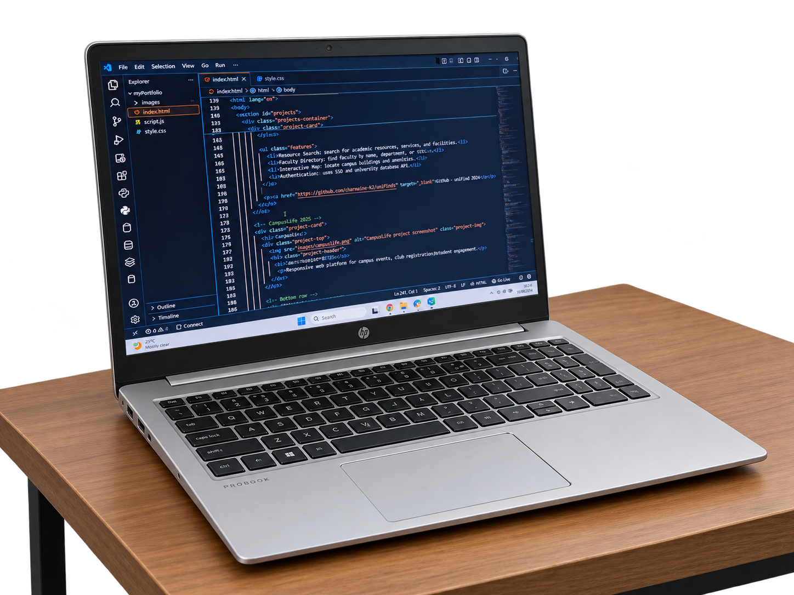
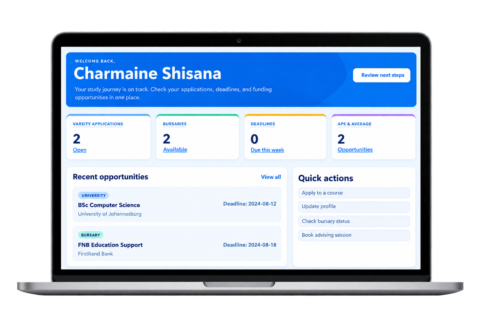
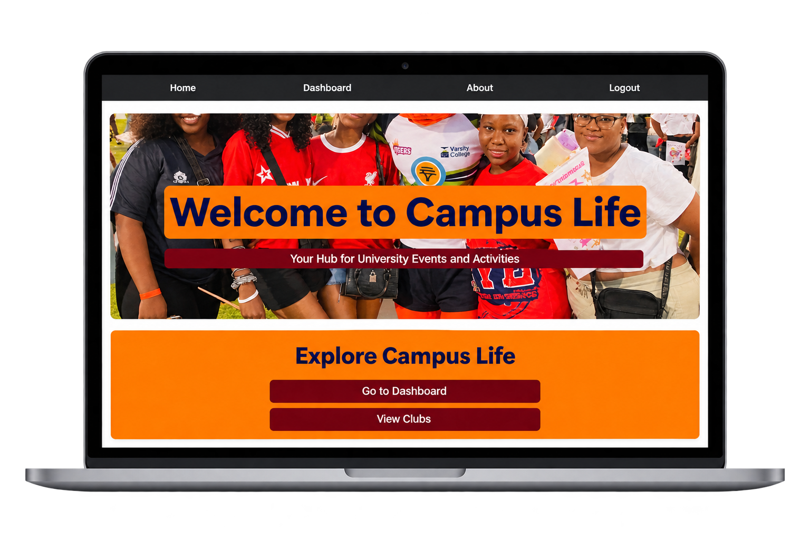
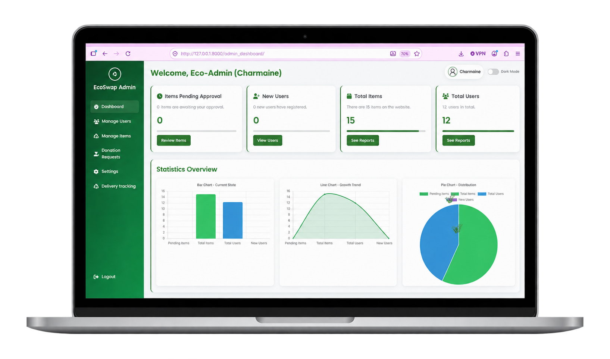

Front-End Developer | Data Capturing / Administration | IT Support
I am an ICT graduate from Sol Plaatje University with a focus on Front-End Web Development, Data Management, Data Capturing, and IT Support. I enjoy coding and designing user-friendly websites, I also have strong skills in data capturing, records management, and admin systems. I am eager to apply my technical and organizational skills in an entry-level ICT role.
I am a fast learner, adaptable, and a collaborative team player. During my studies, I enjoyed troubleshooting technical issues with my peers, asking questions, and getting hands-on to understand how systems really work. I bring positive energy, a willingness to learn from experienced professionals, and a commitment to contribute wherever I can. I am based in Limpopo but open to opportunities in Johannesburg and beyond as I start my professional journey in an environment that values growth and innovation.

Ntwanano HIV Support Programme | Elim, Limpopo | Oct 2026 - Current
Northern Cape Department of Education | Dec 2025
Students Organisation | Sol Plaatje University | Feb 2024– Nov 2025
Selected work showcasing responsive web apps, platform design, and student-focused solutions.

Searchable platform to find university resources

Responsive web platform for campus events, club registration, student engagement

Sustainability-focused app (swap/reuse items, manage deliveries)
Professional achievements and training credentials.
Awarded a Diploma in Information and Communication Technology in Applications Development from Sol Plaatje University, with skills in software development, programming,Data Analysis and IT solutions.
ViewDeveloped entry‑level programming skills using Python. Built simple scripts, understood core concepts like variables and loops, and applied problem‑solving through coding.
ViewGained foundational knowledge in data visualization and reporting. Learned how to create dashboards, analyze datasets, and present insights in a clear, professional way.
ViewCompleted the Introduction to Office Administration course, gaining essential skills in office management, communication, and productivity.
ViewCompleted Essentials of Data Visualization using MS Excel, gaining skills in Excel data analysis, dashboard creation, quantitative analysis, and data visualization.
ViewBuilt strong skills in using Excel formulas and functions to organize, calculate, and analyze data. Learned how to create efficient spreadsheets, automate tasks, and improve accuracy in reporting and decision‑making.
ViewStrengthened communication skills by mastering grammar essentials. Improved accuracy in writing and speaking, ensuring clarity and professionalism in workplace communication.
View
I am a hardworking and dedicated professional who brings both technical ability and strong personal qualities to the workplace.
I thrive under pressure, remain focused on delivering results, and adapt quickly to new challenges.
I work well in a team environment, contributing to collaboration and shared success,
but I am equally effective when working independently and taking initiative.
My strengths include clear communication,
problem‑solving, and attention to detail, all of which ensure that tasks are completed accurately and efficiently.
Beyond technical knowledge, I offer reliability, resilience, and a strong work ethic. I am committed to continuous learning
and growth, and I bring a positive attitude that helps build strong working relationships. In short, I am someone who can be trusted
to add value, support organizational goals, and deliver consistent results.